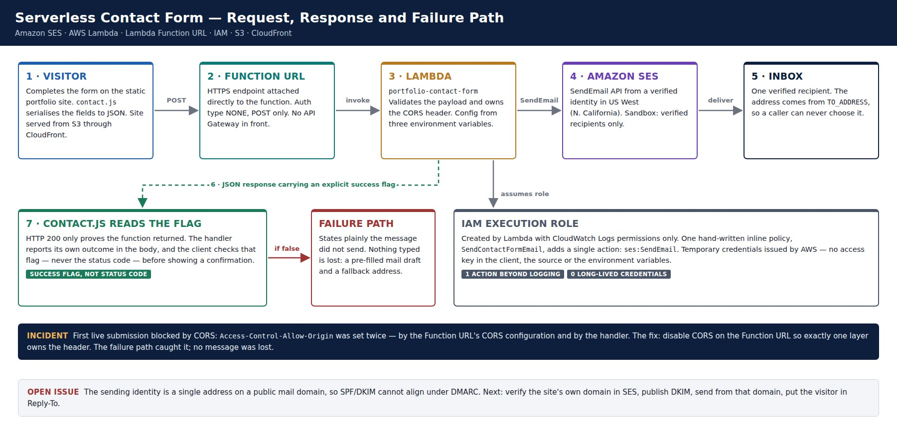
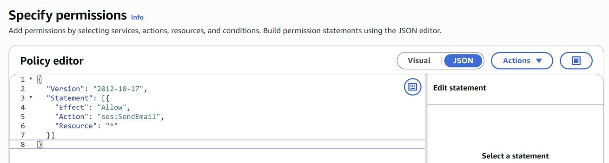
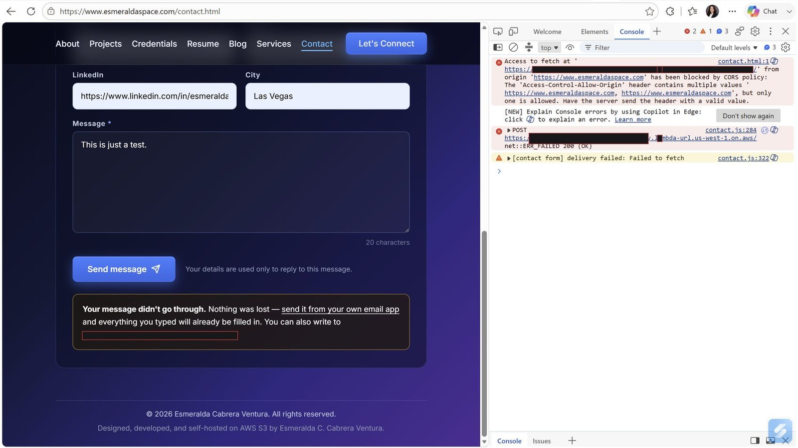
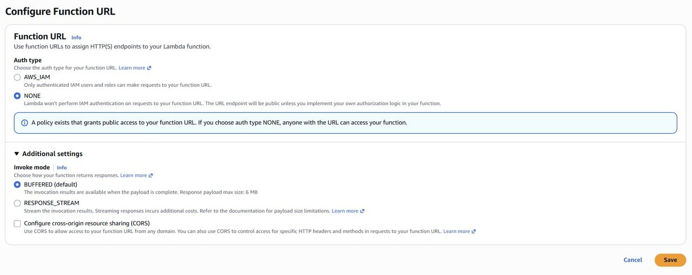
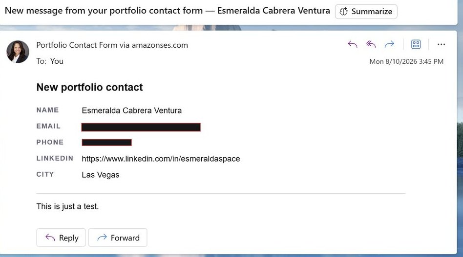
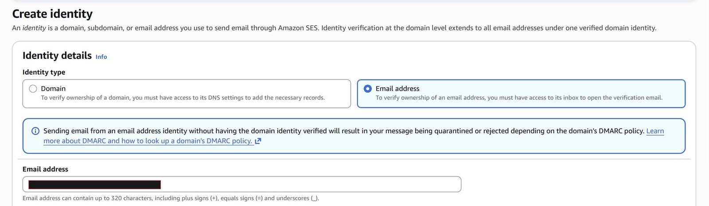

An HTTP 200 is not a delivery receipt: building a contact form that cannot lie
How I gave a static portfolio site a working contact form on Amazon SES and AWS Lambda — with one IAM action, no stored credentials, and a failure path engineered as carefully as the success path.
A static website cannot process a form. My portfolio is HTML, CSS and JavaScript sitting in an S3 bucket behind CloudFront, and that architecture is fast, cheap and very hard to break. It also has one structural gap: there is no process running anywhere that can receive an HTTP POST. A contact form on a site like that needs somewhere else to send its data.
There are three conventional answers. A mailto: link needs no infrastructure, but it depends on the visitor having a configured desktop mail client. On a phone, or in a browser signed into webmail, it often does nothing at all — the visitor experiences a broken link, and I never learn anyone tried. A third-party form service is quick to adopt and usually well engineered, but it puts an outside company in the path of a core function of the site and routes visitor messages through them. The third option is a small backend of my own.
I chose the third. Cost did not decide it, because all three are close to free at portfolio volume. Control and learning value did: the message path stays inside infrastructure I own, and a contact form is a low-stakes place to make mistakes with IAM policies and cross-origin headers. I made one of those mistakes, and it turned out to be the most useful part of the build.
Requirements, fixed before any resource existed
The requirements were modest, and I wrote them down before creating anything, so that every later decision had something to be measured against.
- Deliver each message to a single inbox
- Accept submissions only from the portfolio's own origin
- Never silently lose a message
- Hold no credentials in client-side code, which is public by definition
- Be cheap enough to leave running indefinitely without thinking about it
The third line is the one that shaped the design most, and it is the easiest to underrate. Losing a message loudly is a bug. Losing it silently is a broken promise to someone who took the time to write.

The smallest backend that does the job correctly
The finished request path has four AWS components. Amazon SES provides a verified sending identity. A Lambda function receives the submission, validates it and calls SES. An IAM role grants that function exactly one permission. A Lambda Function URL exposes the function to the browser over HTTPS.
There is no API Gateway. That was deliberate. API Gateway brings request validation, throttling, usage plans, custom domains, WAF integration and staged deployments — genuinely useful features that this endpoint does not need. It has one route, one method and one consumer. A Function URL is a built-in HTTPS endpoint attached directly to the function, with CORS configuration and very little else, which is an accurate match for the requirement.
Simplicity has a price, and it is worth naming rather than discovering. There is no built-in rate limiting. There is no WAF in front of the endpoint. The hostname is AWS-generated rather than a custom domain. And the auth type is NONE, which means anyone who learns the URL can invoke the function. I come back to what that means, and why I accepted it, further down.
SES over an SMTP relay
SES is an API-first sending service that lives in the same account and IAM model as everything else. That matters more than it first appears. The function can be granted permission to send through its execution role, using temporary credentials that AWS issues and rotates, so no password is stored anywhere. An SMTP relay would need a username and password held somewhere and rotated by hand. Removing a long-lived credential from the design removes an entire category of failure.
The trade-off is the SES sandbox: new accounts can only send to verified addresses. For a single verified inbox that costs nothing today. It becomes a real constraint the moment the system needs to email the visitor — to acknowledge receipt, for example.
Configuration out of the source
Three values that would otherwise be hard-coded are environment variables: ALLOWED_ORIGIN, FROM_ADDRESS and TO_ADDRESS. None is a secret in the cryptographic sense, but keeping them out of the code has practical benefits. The recipient can change without a redeploy. The same function can point at a staging origin. And the source can be shared or published without exposing personal addresses. Lambda encrypts environment variables at rest with a service-managed key, which suits configuration of this kind; a genuine secret such as an API token would belong in Secrets Manager or Parameter Store instead.
One IAM action, not a managed policy
Lambda creates an execution role automatically, and that role starts with permission to write CloudWatch Logs and nothing more. Sending email needs an additional grant, and this is the point where convenience is most tempting. Attaching a broad managed policy such as AmazonSESFullAccess would work immediately. It would also let the function delete identities, alter the suppression list and read sending statistics.
Instead I wrote an inline policy, SendContactFormEmail, that grants a single action: ses:SendEmail. If the function were ever compromised through a payload-handling bug, the attacker would inherit the ability to send email and nothing else. It cost about ninety seconds of extra work.

It is not yet as narrow as it could be. The resource is a wildcard. Scoping it to the ARN of the one verified identity, and adding a condition on the permitted From address, would reduce the compromised-function case from "send as any identity in the account" to "send as one identity, from one address." That is on the list.
Designing the failure before the success
This is the decision with the most thought behind it and the least visibility in the infrastructure.
A Lambda function that catches an SES exception and returns normally still produces an HTTP 200. A client that treats 200 as success will then tell the visitor their message was sent when it was not. The visitor closes the tab, and the message is gone. Nothing in the logs looks like an error from the browser's point of view, because from the browser's point of view nothing failed.
A 200 means the function ran and returned. It does not mean anyone's email was accepted for delivery.
So the handler reports its own outcome in an explicit success field in the response body, and the client script checks that field — never the status code. When delivery fails, the form does not show a generic error. It says plainly that the message did not go through, confirms that nothing the visitor typed has been lost, and offers a pre-filled mail draft containing their message along with a fallback address to write to directly. Until the endpoint is configured at all, the form says that too, rather than failing silently.
A contact form that quietly loses messages is worse than having no contact form, because it also spends the visitor's goodwill. Treating the failure path as a first-class design problem was my answer to the third requirement. I did not expect to need it on the very first live submission.
The first live submission failed
With the function deployed, the client script uploaded to the bucket and the CloudFront cache invalidated, I submitted a test message from the production site. The browser console reported that the request had been blocked by CORS policy: the Access-Control-Allow-Origin header contained multiple values where only one is allowed. The network entry showed a 200 status alongside a failed fetch — exactly the confusing combination the response contract was built for.

Root cause: two correct layers, jointly broken
CORS headers were being applied in two independent places. The Function URL has its own CORS configuration, and when it is enabled the Lambda service attaches headers to the response on the way out. I had configured it correctly: one permitted origin, the content-type header, POST only, credentials off. The handler code was also building an Access-Control-Allow-Origin header from its ALLOWED_ORIGIN variable and returning it explicitly.
Neither layer was wrong. Each did precisely what it had been told to do. The response that reached the browser simply carried the header twice, the CORS specification requires a single origin value, and the browser rejected the response — after the function had already run to completion.
This class of bug is characteristic of platform features that overlap with application code. The Function URL's CORS panel presents itself as the way to configure CORS, and it is. A handler that sets its own headers is also correct, and is exactly what the code would need behind API Gateway or any other front door. Individually reasonable, jointly broken, and nothing in either interface mentions the other.
The diagnostic signal was precise and worth remembering. A CORS error that names a header and says it contains multiple values is not describing a misconfigured origin. It is describing duplication — two things are setting the same header, and one of them has to stop.
The fix, and why this direction
I disabled CORS on the Function URL and left the handler as the single owner of the header. Two reasons tipped it that way. The handler already reads ALLOWED_ORIGIN, so the permitted origin lives with the rest of the configuration and can change without touching the URL settings. And header logic that lives in code travels with the code if the endpoint ever moves behind API Gateway.

The incident cost nothing. It happened on a test submission, and the recovery path behaved as designed. Had the client trusted the 200, the same bug would have produced a form that appeared to work perfectly while discarding every message it received — the kind of defect you discover months later, by accident, when someone mentions they wrote and never heard back.

Being precise about the security boundary
The most important property of the system is that it holds no long-lived credentials. The function gets temporary credentials through its role, the role can do one thing beyond logging, and there is no access key in the client, the source or the environment.
The endpoint itself is public. With auth type NONE, Lambda performs no authentication and the resource-based policy allows invocation by any principal. CORS restricts which origins a browser will let read the response. It does nothing to stop a direct request from curl, a script or another server. CORS here is a browser-side convenience, not a security boundary, and it would be a mistake to describe it as one.
I accepted that risk deliberately and kept the blast radius small. A successful invocation sends one email to a fixed address the caller cannot influence, because the recipient comes from configuration rather than the request. The realistic worst case is inbox spam and a Lambda bill, not data disclosure or lateral movement. It is still a gap, and the mitigations are cheap: reserved concurrency to cap how far a flood can scale, a honeypot field, a CAPTCHA or proof-of-work challenge, and per-IP rate limiting in the handler.
What is still weak
The most consequential open issue is the sending identity. I verified a single email address rather than a whole domain, because address verification takes a click and domain verification means publishing DNS records and waiting. The console warned me at the time that sending from an address identity without a verified domain can get messages quarantined or rejected under the receiving domain's DMARC policy.

The address belongs to a public mail provider whose domain the account does not control, so SES cannot produce SPF or DKIM alignment for it, and the message fails DMARC alignment at the receiving end. The "via amazonses.com" label in the delivered mail is the recipient's client reporting exactly that mismatch, and mail in that state is more likely to be filtered as spam. The fix is well understood: verify the site's own domain in SES, publish the DKIM records, send from an address at that domain, and put the visitor's address in Reply-To so replies still reach them.
The remaining gaps are operational. There is no alarm on function errors or on SES bounce and complaint rates. Log groups have no retention policy. The function was created on a preview Node.js runtime and should be pinned to a generally available one. A header comment still describes an API Gateway deployment that no longer exists. And deployment — edit, upload, invalidate — is manual, which is fine at this scale and the obvious first thing to automate.
What the build demonstrates
At portfolio volume the running cost rounds to zero. Lambda's free tier covers far more requests and compute than a contact form will ever see, SES bills per thousand messages, and nothing runs between submissions, so there is no idle cost at all. The only line item likely to grow unattended is CloudWatch Logs, which is one more reason to set that retention policy.
The judgements that hold up best are the small, disciplined ones: a single IAM action instead of a convenient managed policy, configuration lifted out of the source, and the refusal to treat a status code as proof of delivery. That last one is what turned a production CORS bug from a silent, message-losing failure into a visible, recoverable one.
One smaller lesson came from writing it up. The SES verification emails contained a confirmation link carrying an access key identifier and a request signature. Those links were single-use and long expired, but automated notification emails routinely carry credential material, and they deserve the same care as anything else when screenshotted.
Design the failure path with the same care as the success path. It is the one your users meet on your worst day.
Amazon SES · AWS Lambda · Lambda Function URL · IAM · S3 · CloudFront · CloudWatch · Node.js
Read the full engineering dossier →
The full technical report, with 33 captioned build screenshots, is available on request. More of my work is at esmeraldaspace.com, and I am reachable on LinkedIn.